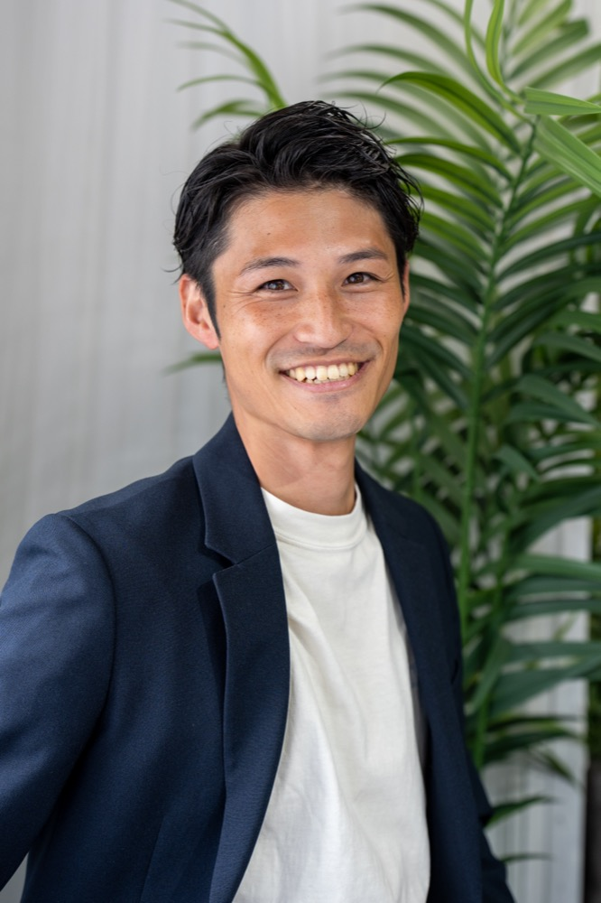

アプリで出会っても、先に進まない。
出会いの数だけでなく、相手選びの軸と交際の進め方を一緒に整理します。

無理をしない自分で、
一緒にいられる人と。
世田谷・目黒・渋谷の出張型結婚相談所
アプリで頑張ってきた、あなたへ。
結婚を「急ぐ場所」ではなく、「整える場所」に。
出会いを探すだけでなく、写真も、会話も、交際の振り返りも。
一人で悩んでいた婚活を、伴走者と一緒に整えませんか。
※IBJ登録会員110,482名（2026年7月15日時点）。IBJ公表資料。FRAMIA単独の会員数ではありません。
入会金 ¥0 ／ お見合い料 ¥0 ／ 入会時の初期費用 ¥77,000（税込・プロフィール写真撮影込み） ／ 無理な勧誘は一切なし
相談は60分・無料
その場での入会勧誘なし
ご希望の場所で出張・対面相談
01 — FOR YOU
頑張っているのに、うまくいかない。
そんなときは、一人で抱える婚活を少し変えてみませんか。

出会いの数だけでなく、相手選びの軸と交際の進め方を一緒に整理します。
お仕事や休日の過ごし方を伺い、無理なく続けられる活動のペースを考えます。
プロフィールや日常から会話の糸口を探し、お見合い後も一緒に振り返ります。
現役カメラマンの視点で、表情や服装、あなたらしい見せ方を相談できます。
過去の経験を責めず、気持ちの伝え方や関係の築き方から伴走します。
料金はすべて公開。無料相談のその場で、入会を迫ることはありません。
60分・無料／相談だけでも大丈夫です
02 — OUR APPROACH
結婚を「急ぐ場所」ではなく、「整える場所」に。
FRAMIAが大切にしている、3つの姿勢です。

経験の少なさを「伸びしろ」として捉えます。過去を責めることは、絶対にしません。
出会いだけでなく、価値観・印象・関係の築き方まで伴走します。
「早く決めて」は絶対に言いません。あなたのペースを、最後まで守ります。
"モテ"を教える場所ではありません。印象・言葉・振る舞いを、あなたらしいまま整えていく場所です。
条件よりも、価値観と暮らしの相性を、一緒に整理していきます。
WHY COUNSELING?
FRAMIAの月会費は11,000円。プロフィールづくり、お見合いの準備、交際中の迷いまで相談できます。月1回45分の面談に加え、LINE・電話でもサポート。出会った後にどう進めるかまで、一緒に考えるための費用です。
料金とサポートを確認する →
代表紹介
田中 陣 Jin Tanaka
プランナーとして3年。ビデオグラファーとして10年。
300組以上のご夫婦を、一番近くで見てきました。
うまくいくご夫婦には、共通点がありました。
相手のことを自分の言葉で語れること。
自分の軸をちゃんと言葉にできていること。
結婚"後"の暮らしを、二人でイメージできていること。
この知見を、式場の外でも活かしたい。
結婚する人を「増やす」のではなく、
結婚してからも幸せな人を「増やす」手伝いをしたい。
それが、FRAMIAを始めた理由です。
結婚相談所というと「早く決めてくれる人を増やす場所」
というイメージがあるかもしれません。
でも、焦って選んだ結婚は、焦った暮らしにつながります。
だからFRAMIAでは、まず立ち止まります。
出会いから結婚、その先の暮らしまで。
一人で頑張ることを、一度やめてもいい。
ここには、伴走者がいます。
STRENGTH
婚活において、プロフィール写真は大切な入り口です。ウェディングビデオグラファーとして数百組の"らしさ"を撮ってきた経験を活かし、あなたの魅力を引き出す一枚を撮影します。プロフィール写真の撮影は、入会時の初期費用に含まれています。
03 — SUPPORT & PRICE

| 入会時の初期費用（登録料＋活動サポート費・プロフィール写真撮影込み） | ¥77,000 |
|---|---|
| 登録料 | ¥33,000 |
| 活動サポート費 | ¥44,000 |
| 月会費 | ¥11,000 |
| 成婚料 | ¥220,000 |
※すべて税込表示です。初期費用77,000円には、プロフィール写真の撮影も含まれます。
合計 407,000 円（税込）
初期費用77,000円 ＋ 月会費11,000円 × 10か月 ＋ 成婚料220,000円
通常料金での計算例です。活動期間・成婚を保証するものではありません。PROOF
FOUNDING MEMBERS / 限定5名
FRAMIAは開業したばかりで、相談所としての成婚実績・お客様の声はまだありません。一人ひとりと丁寧に向き合うため、モニター会員を募集します。
FROM CONSULTATION TO START
無料相談のあと、その場で入会を決める必要はありません。内容と費用を確認し、ご自身で納得してから次へ進めます。
フォームまたはLINEから希望日時をお知らせください。世田谷・目黒・渋谷を中心に、ご指定の場所へお伺いする対面相談が基本です。場所はご予約後に相談して決められます。
婚活で困っていることや、結婚後に大切にしたいことを一緒に整理します。相談だけで終了しても大丈夫です。
希望があれば活動内容・料金・契約条件をご説明します。入会を決めた場合は、必要書類と手続きを個別にご案内します。相談当日に決める必要はありません。
人生棚卸し面談とプロフィール作成から始めます。活動中は、お見合いの準備や振り返り、定期面談、LINE・電話でサポートします。
入会金は0円です。費用と契約条件を確認してから入会を判断できます。
料金・サポート内容を詳しく見る →FAQ
FRAMIAは結婚を「急ぐ場所」ではなく「整える場所」にしたいと考えています。まずはあなたにとっての「結婚」を言葉にする時間から始めます。「早く決めてください」とは、絶対に言いません。
13年間、300組以上のご夫婦を一番近くで見てきました。うまくいくご夫婦には共通点があり、その知見を「結婚する人を増やす」のではなく「結婚してからも幸せな人を増やす」手伝いに使いたいと思ったからです。
あなたの大切にしたいものを言葉にする60分です。まずは、少しずつあなたのことを教えてください。
絶対にしません。
面談は、ご指定の場所へお伺いする出張形式を基本としています。ご自宅、カフェ、レンタルスペースなどで、対面でのご相談を承ります。遠方の方や2回目以降のご相談は、オンラインでの対応も可能です。
いいえ、退会は自由です。あなたの人生に関わることを無碍にはしません。
大丈夫です。恋愛経験の少なさはむしろ「伸びしろ」。自分自身の在り方を見つめた上で進めていきましょう。
あります。FRAMIAでは、お相手探しに加えてプロフィール作成やお見合い後の振り返り、交際中の相談までサポートします。一人で判断し続ける負担を減らしたい方は、まず今のお悩みをお聞かせください。
はい、歓迎しています。
大丈夫です。カメラマンの経験を活かし、表情や写真の見せ方も一緒に整えながら撮影します。プロフィール写真の撮影は、入会時の初期費用77,000円（税込）に含まれています。
IBJは、全国の加盟相談所が会員データベースを共有するお見合いネットワークです。FRAMIAはIBJの正規加盟店として活動しています。
IBJのシステムでお相手を探し、お互いの了承が得られたら1時間程度のお見合い。お見合い料はかかりませんが、一つ一つの出会いを大切に進めましょう。
人生棚卸し面談、お見合いサポート全般、振り返り、出張・対面を基本とした面談月1回（オンラインも相談可）、LINE・電話サポート随時無制限です。
CONTACT
結婚の前も、その先も、あなたらしくいられるように。まずは60分、今の状況を一緒に整理しましょう。
日時を指定して予約したい方は
フォームから希望日時をお知らせください。受付後24時間以内を目安に、日程を確認してご連絡します。対面でのご相談を基本に、ご希望の場所はその後のやりとりで調整します。遠方の方など、オンラインをご希望の場合もご相談ください。
フォームが表示されない場合は こちらから直接開いて ご入力ください。